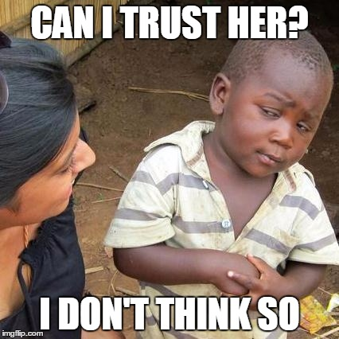

5 Things to Know When Planning Social Event
Are you planning to throw your friend’s birthday party soon? Are you throwing a dinner party? Here are five tips you need to know when you plan an event.
Posted on April 1, 2018 by Mia Suh
https://flic.kr/p/8rvxxz
Tip 1. Make sure you describe the event as important, fun, entertaining, meaningful, great or useful.
Steel & Konig (2006) found that people are more likely to show up if the event seems more valuable and accessible to them. People may browse so many events, and perhaps get tired of looking for the right one. Your event has to stand out!
Tip 2. If your event is still far away, focus on the “WHY, WHY, WHY” of the event.
Suh & Hsieh (2015) found that people more care about ‘why they should attend the event’ when the event is in far advance. It actually drives them to press the ‘going’ button. A month ahead of the event? You will need to buzz your event starting now! Early buzz is indeed important in the event marketing. To make your event more appealing, remember that people more care about why they should attend the event in far advance. Research found that when the event is temporally far away, people have mental representation salient toward the core aspect of the event -- why this event is worthwhile to them. In fact, they are more likely to RSVP to the event!

Tip 3. But when the event date is just a few days away, start focusing more on the “HOW, HOW, HOW”.
Research also found that when the event is near, people more care about ‘how easily they could attend’. Let them know how it is like a piece of cake (Suh & Hsieh, 2015). “How” of event could mean many things - free parking, public transportation, good weather, free tickets, or even kids-friendly options! This is actually what people have in mind when to think about the event in the near future. Provide this information, and nudge them to RSVP to your event!
Tip 4. If you target “the regulars” of the event, focusing on make the event sound more feasible, even if it is far future.
They already know how amazing the event is. Make sure how “easy” it is this time. (Suh & Hsieh, 2015) Although “why” is generally more important when the event is far away (see point #2 above), it doesn’t always work with the regulars of the event- they may already know what to expect from the event. Research says that the regulars’ intention to participate in the event depends on how perceived feasibility.

Tip 5. Have a lot people who RSVPed? DO NOT TRUST the number of RSVP!
Research found that many don’t shows up to the event (Frederick, Loewenstein, & O'Donoghue, 2002). People tend to overestimate their availability. They may RSVP although they do not realize that they actually cannot make it. Don’t let yourself down just because not many people RSVP’ed to your event do not show up - it is just how human works. It is not your fault!
